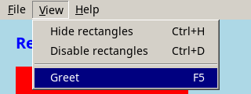

API reference › Doqua.Controls
MainMenu class
public class MainMenu : ControlA window's menu bar in the classic style: a strip of titles ("File", "Edit", ...) across the top of its parent, each opening a drop-down list of MenuItems. Add it to the window's root panel, above (or before) the other controls; it anchors itself to the top edge and stretches across. Leave Control.Height pixels free for it at the top.
- Mouse: a click on a title opens its menu; while a menu is open, moving to another title opens that one; a click on an item chooses it, a click outside closes the menu.
- Keyboard: Alt + the letter marked with '&' in a title ("&File" = Alt+F) or F10 open a menu; Left / Right move to the neighbouring menu, Up / Down move in the list, Enter chooses, Escape closes.
- Shortcuts: an item's
MenuItem.ShortcutText("Ctrl+O", "Ctrl+Shift+S", "F5", "Del") also works as a keyboard shortcut in the whole window, after the focused control had the key (so anInputkeeps its own Ctrl+C). Disabled items and items of disabled menus do not react.
Choosing an item raises MainMenu.ItemClick, then the item's own MenuItem.Click.
var open = new MenuItem("Open...", "Ctrl+O");
open.Click += (sender, e) => OpenFile();
var menu = new MainMenu
{
Items =
{
new MainMenuItem("&File") { Items = { open, MenuItem.Separator(), new MenuItem("Exit") } },
new MainMenuItem("&Help") { Items = { new MenuItem("About") } },
},
};
root.Children.Add(menu);
Constructors
| MainMenu() | Creates an empty menu bar, anchored to the top edge of its parent. |
MainMenu()
public MainMenu()Creates an empty menu bar, anchored to the top edge of its parent.
Properties
| Background | Face color of the bar and of the menus. |
| Color | Text color of the titles and items. |
| DisabledColor | Text color of disabled titles and items. |
| Font | Font of the titles and of the drop-down menus; Font.Default unless set. |
| IsOpen | True while one of the menus is open. |
| Items | The titles, left to right. |
| SelectionBackground | Background of the highlighted item in a menu. |
| SelectionColor | Text color of the highlighted item in a menu. |
Background
public Color Background { get; set; }Face color of the bar and of the menus.
Color
public Color Color { get; set; }Text color of the titles and items.
DisabledColor
public Color DisabledColor { get; set; }Text color of disabled titles and items.
Font
public Font Font { get; set; }Font of the titles and of the drop-down menus; Font.Default unless set.
IsOpen
public bool IsOpen { get; }True while one of the menus is open.
Items
public MainMenuItemCollection Items { get; }The titles, left to right.
SelectionBackground
public Color SelectionBackground { get; set; }Background of the highlighted item in a menu.
SelectionColor
public Color SelectionColor { get; set; }Text color of the highlighted item in a menu.
Methods
| Close() | Closes the open menu, if any, without choosing an item. |
| OnItemClick(MenuItemEventArgs) protected | |
| OnMouseDown(MouseEventArgs) protected | |
| OnMouseLeave(EventArgs) protected | |
| OnMouseMove(MouseMoveEventArgs) protected | |
| OnRender(DrawingContext) protected | Draws this control's own content. (0, 0) is the control's top-left corner and drawing is clipped to its bounds. Children are drawn by the framework afterwards, on top. |
| Open(int) | Opens the menu of the title at index (if it and the bar are enabled and shown in a window). |
Close()
public void Close()Closes the open menu, if any, without choosing an item.
OnItemClick(MenuItemEventArgs)
protected virtual void OnItemClick(MenuItemEventArgs e)OnMouseDown(MouseEventArgs)
protected override void OnMouseDown(MouseEventArgs e)OnMouseLeave(EventArgs)
protected override void OnMouseLeave(EventArgs e)OnMouseMove(MouseMoveEventArgs)
protected override void OnMouseMove(MouseMoveEventArgs e)OnRender(DrawingContext)
protected override void OnRender(DrawingContext dc)Draws this control's own content. (0, 0) is the control's top-left corner and drawing is clipped to its bounds. Children are drawn by the framework afterwards, on top.
Open(int)
public void Open(int index)Opens the menu of the title at index (if it and the bar are enabled and shown in a window).
Events
| ItemClick | Raised when an item of one of the menus is chosen, before the item's own MenuItem.Click. |
ItemClick
public event EventHandler<MenuItemEventArgs>? ItemClickRaised when an item of one of the menus is chosen, before the item's own MenuItem.Click.
Inherited members
From Control: Anchor, Bounds, CanFocus, ContextMenu, Cursor, Enabled, EnabledChanged, Focus, Focusable, Focused, GetContextMenu, GetCursor, GotFocus, Height, Invalidate, IsEffectivelyEnabled, IsEffectivelyVisible, IsMouseOver, IsTabStop, KeyDown, LostFocus, MouseClick, MouseDown, MouseEnter, MouseLeave, MouseMove, MouseUp, MouseWheel, Name, OnEnabledChanged, OnGotFocus, OnKeyDown, OnLostFocus, OnMouseClick, OnMouseEnter, OnMouseUp, OnMouseWheel, OnSizeChanged, OnTextInput, OnVisibleChanged, Parent, SizeChanged, TextInput, Visible, VisibleChanged, VisualChildren, Width, X, Y